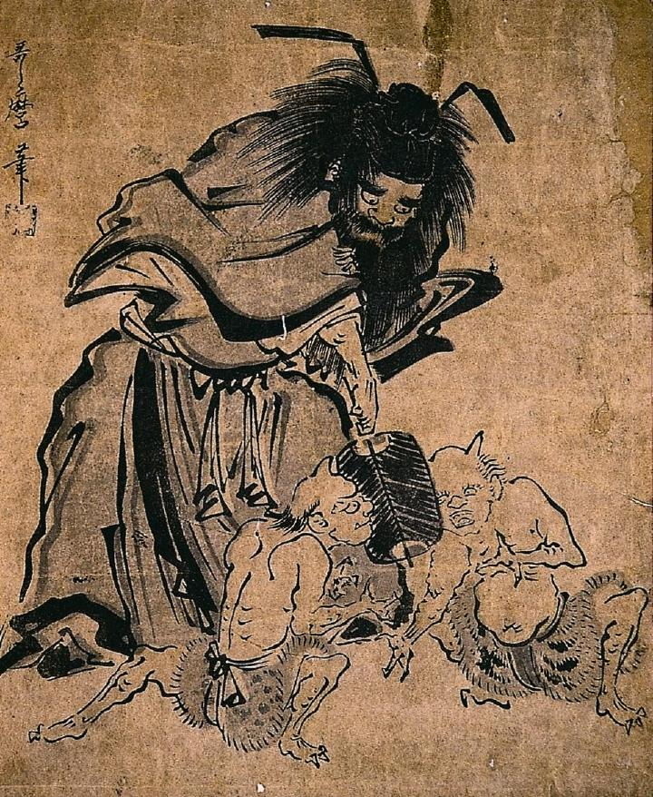

褌に虎皮の腰巻をつけた2体の鬼が相撲を取っている。鬼の指は3本である。
著作者：喜多川歌麿／出典：親書誌：A963_ferenchopp_0004：（鍾馗の行司；ショウキノギョウジ）／日付：2011／資源識別子：A963_ferenchopp_0004_0001_0000
Copyright (c)2010- International Research Center for Japanese Studies, Kyoto, Japan. All rights reserved.